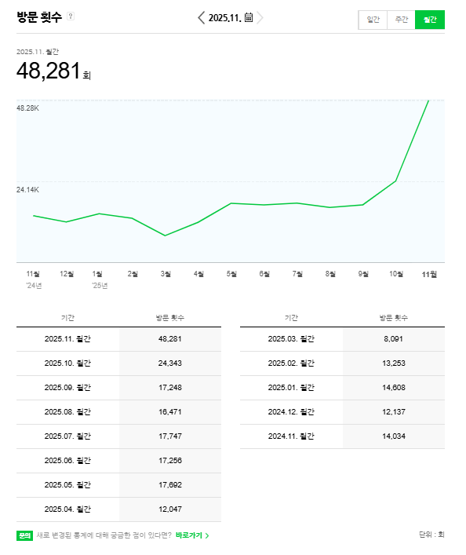
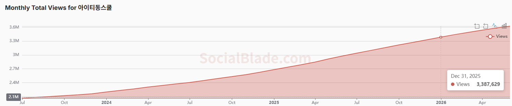
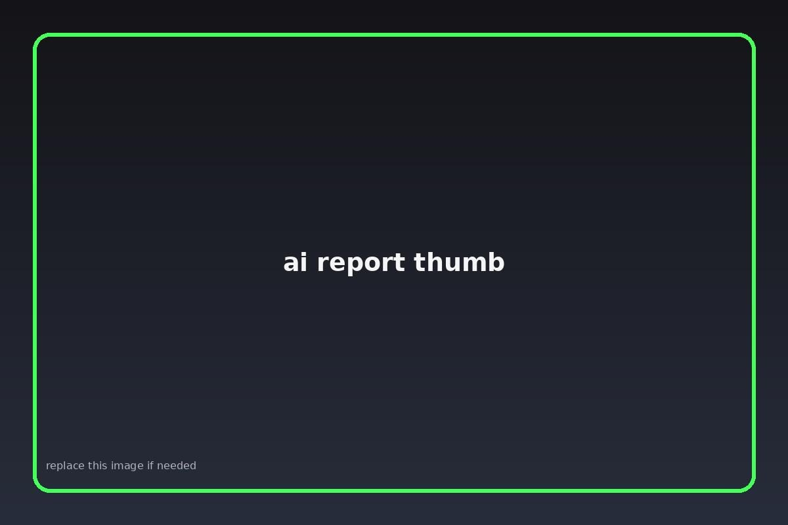
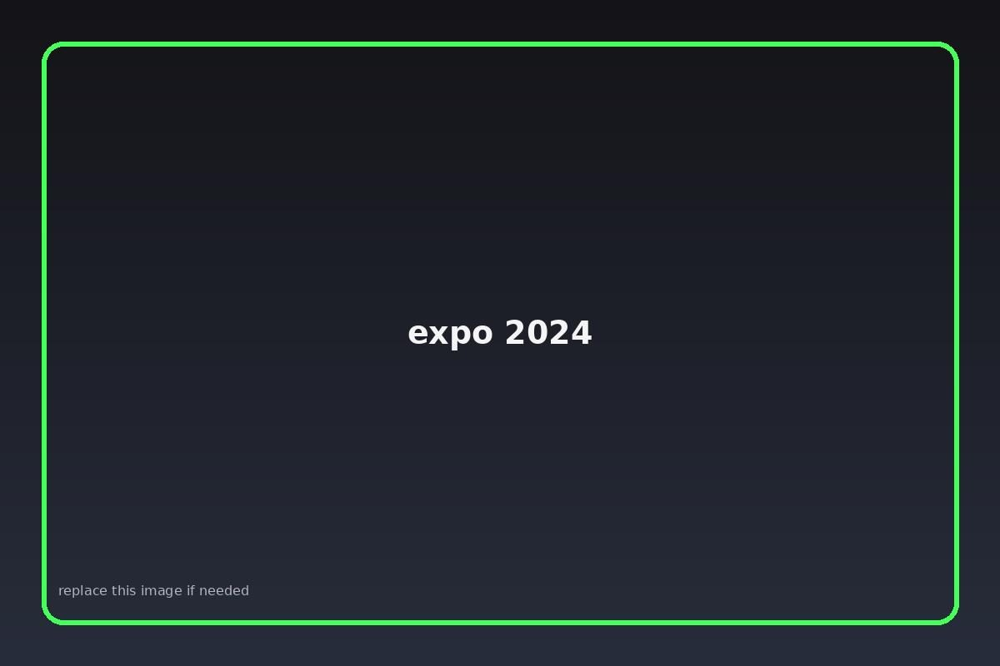
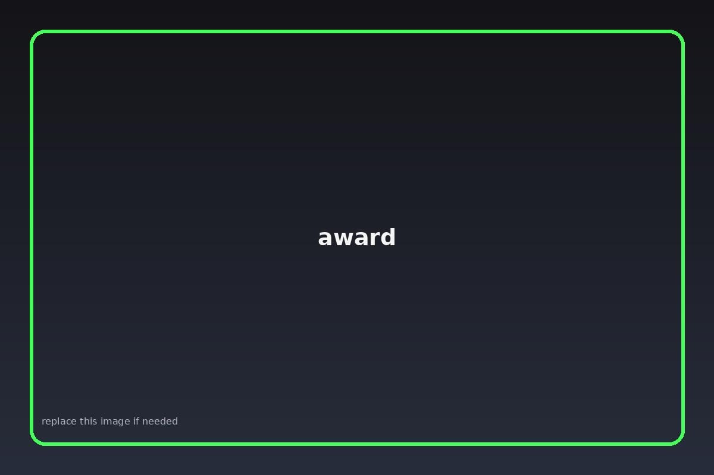

Digital Marketing Internship
2025.09.01–2025.12.31 / 블로그 작성, 검색광고 등록, 협력사 컨택, 체험단 커뮤니케이션, SNS 채널 운영
Overview
2025.09.01–2025.12.31 / 블로그 작성, 검색광고 등록, 협력사 컨택, 체험단 커뮤니케이션, SNS 채널 운영
소비자평가 기고 기사 8건 / 브랜드, 플랫폼, 팬덤, AI, UX, 콘텐츠 투어리즘 사례 분석
Gazet, Wordly, Clova X, Wrtn을 동일 주제로 비교하고 SEO·전환·가독성 기준으로 분석
콘텐츠 IP와 지역 관광의 연결 구조를 일본 사례 중심으로 분석 / 2024 산학협력 EXPO 전시, 교외대회 장려상
Project 01
교육 플랫폼 기업에서 콘텐츠마케팅, 퍼포먼스마케팅 인턴으로서 현장실습을 진행했습니다.
Performance
운영 참여 기간 내 블로그 통계 기준. 개인 단독 성과가 아니라 운영 참여 성과로 표기.
반영 수치: 2025.09 17,248회 → 2025.10 24,343회 → 2025.11 48,281회
월간 방문수 증가
계산 기준: (48,281 - 17,248) / 17,248네이버 블로그 월간 방문수 통계 원본 캡처.

YouTube
운영 참여 기간 전후의 누적 조회수 변화로, 개인 단독 성과가 아닌 채널 운영 참여 참고 지표로 표기했습니다.
누적 조회수 증가
3,159,363 → 3,387,629 / 약 +7.2%반영 수치: 2025.08.31 3,159,363회 → 2025.12.31 3,387,629회
images/youtube_total_views_dec31.png 위치에 원본 캡처를 넣었습니다.

Project 02
기사 제목을 클릭하면 원문으로 이동합니다.
차량 공유 서비스를 넘어 이동 경험을 디자인하는 브랜드 관점의 사례로 정리.
지방정부 콘텐츠가 유머와 캐릭터를 통해 행정 메시지를 전달하는 방식 분석.
스포츠 팬덤, 영화 흥행, 브랜드 협업이 만든 새로운 소비 흐름 정리.
Work Sample
Gazet, Wordly, Clova X, Wrtn을 동일 주제의 블로그 콘텐츠로 비교했습니다. 평가 기준은 검색 상위노출 가능성, 콘텐츠 경쟁력, 전환 유도력, 문장 자연스러움, 가독성, 정보 신뢰도, 톤앤매너 일관성, 독자 친화성입니다.
보고서 PDF 보기
AI REPORT IMAGEProject 03
2024 산학협력 EXPO 전시 · 교외대회 장려상 수상
콘텐츠 투어리즘을 팬덤 소비, 경험의 재현, 지역 재생 관점에서 정리했습니다. 일본 누마즈와 가스카베 사례를 중심으로 콘텐츠가 지역 방문 동기와 상권 소비로 이어지는 방식을 분석했습니다.
images/expo_2024.jpg 파일명으로 넣어두면 표시됩니다.

images/award.jpg 파일명으로 넣어두면 표시됩니다.

Contact
Content Marketing · Digital Marketing · UX/UI